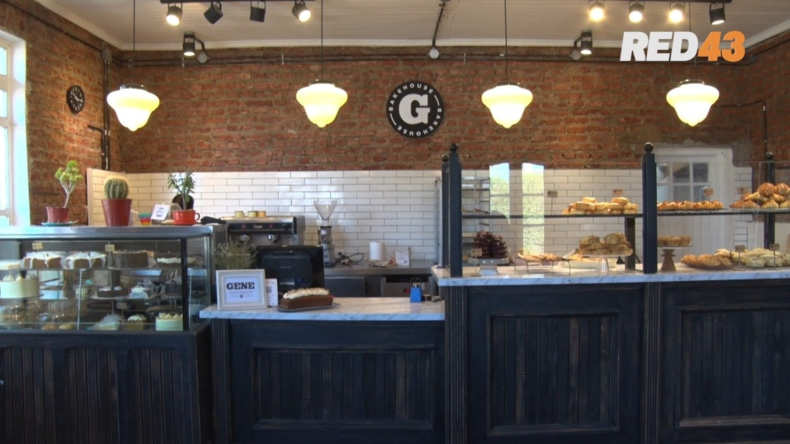

Genezaret González es de México y es Licenciada en Gastronomía. Hace 7 años llegó a Esquel, y maravillada por el entorno natural que rodea a la ciudad, la eligió como su nuevo hogar.
Más conocida como Gene, pudo desarrollar su emprendimiento y hoy lleva adelante junto a un gran equipo una de las reposterías más deliciosas de la ciudad que promete seguir creciendo y acompañando a los esquelenses y turistas.
La repostería, una pasión que comienza en la infancia
Gene contó que su gusto por la cocina y la pastelería está ligado a sus raíces mexicanas y a las tradiciones de su familia.
"En México la comida es parte fundamental de los momentos, nuestra cultura siempre está acompañada por algún alimento. En mi familia, a mis tías les encanta cocinar y siempre es un momento de encuentro el tener que realizar alguna preparación para alguna festividad o cumpleaños. Mi mamá es la tía de la familia que le encanta regalar la torta de cumpleaños; siempre me tocó acompañarla a hacer el pedido de la torta y para mí era un momento especial y divertido", contó.
Quienes desean probar algo rico para acompañar meriendas o desayunos pueden acercarse a Gene Repostería, ubicada en Almafuerte Nº 1101, de lunes a sábados en horario corrido de 8:00 a 20:00.